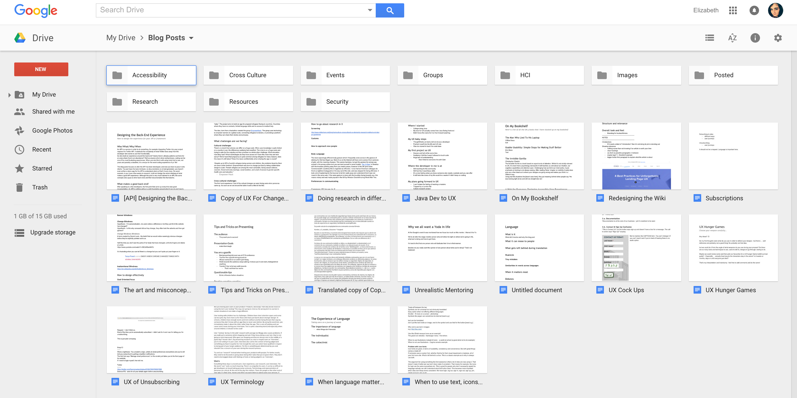

- Keep a backlog of ideas that you want to explore
- Blog for yourself
- Your point of view is always unique
- Try never to make assertions that you haven't tested
- No topic is too small or insignificant
Elizabeth's Blogging
- Why do I blog?
- What do I blog about?
- What makes a good blog topic or piece?
- How to store blog posts and notes
Should you just brain dump?
Yes!

Example Topics
- What is SEO? And how do I apply it to my website?
- Linters what are they? Why do I need to use them?
- What is Object Oriented programming?
- Heroku 101
- How to set DNS server to point to amazon s3 bucket?
- How to center anything with CSS
- Which Javascript framework should i choose?
- Mobile first design and development
- Bootstrap vs Foundation?
- https://blog.womenhackfornonprofits.com
- http://blog.lilianakastilio.co.uk/
- http://blog.tanyapowell.co.uk/
- http://echesters.co.uk/
- https://medium.com/@krissygoround
- https://www.djm.org.uk/
- http://matthewjamestaylor.com/blog/